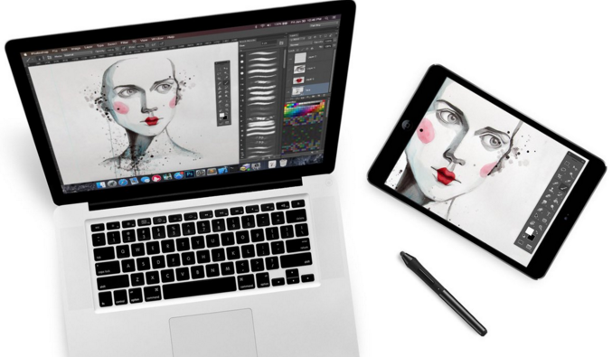

-
Features
SpecificationsDisplay 7.90-inch
Processor 1GHz
Front Camera 1.2-megapixel
Resolution 768x1024 pixels
RAM 512MB
OS iOS 6
Storage 16GB
Rear Camera 5-megapixel
Battery capacity -
Design
Astropad Graphics TabletAstropad Graphics Tablet is an iPad app, but it works with a Mac app to turn your iPad into a graphics tablet. Yes, that's right, you can use your iPad to draw directly into Photoshop or another applications on your Mac including Illustrator, Lightroom, Corel Painter, Manga Studio, Pixelmator, Mischief with Astropad. It features palm rejection, pinch and zoom, customisable shortcuts and importantly, pressure sensitivity to allow it to work with lots of styluses, including many of those featured in our best stylus round-up.
 -
App_Store
-
Gallery
Backlit LCD Display The high-resolution,9.7-inch LED-backdit IPS display on iPaf is remarkably crisp and vivid.Which makes it perfect for web browsing,watching movies, or viewing photos

-
Tech_spec
Size and weight
Height: 9.56 inches (242.8 mm)
Width: 7.47 inches (189.7 mm)
Depth: 0.5 inch (13.4 mm)
Weight: 1.5 pounds (0.68 kg) Wi-Fi model;